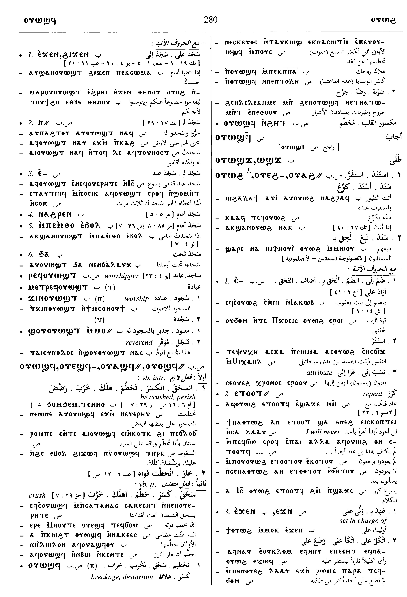
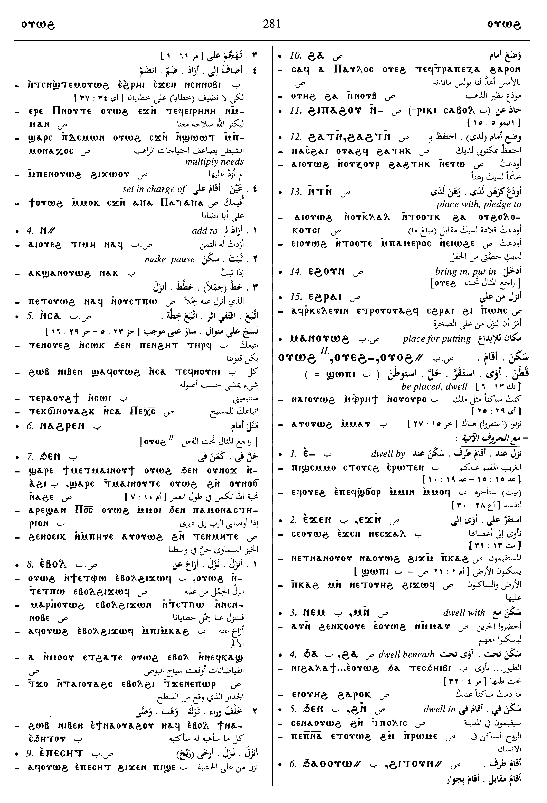
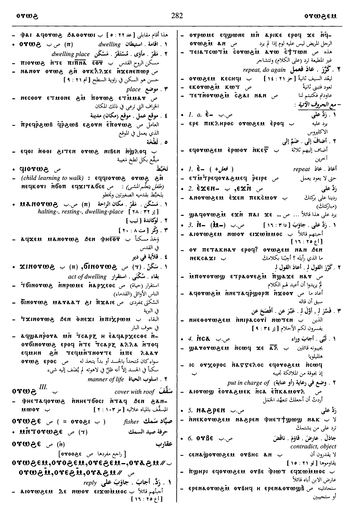
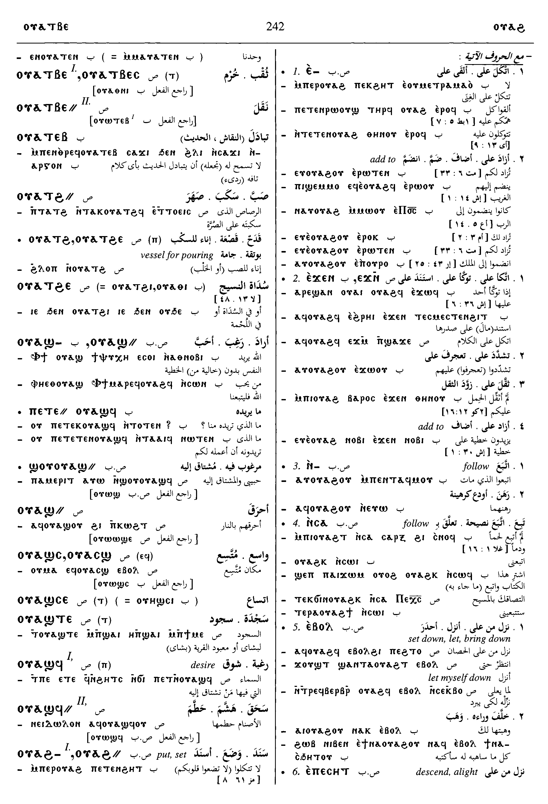

(verb)
put, set, be (there)
― intr: S,B,F
― tr: [επιτιθεναι]
intr: be placed, dwell [κατοικειν, κατασκηνουν, μενειν]
― intr: S,B,F
― tr: [επιτιθεναι]
intr: be placed, dwell [κατοικειν, κατασκηνουν, μενειν]
1: put, set, be
complete+
| put, set, be2711 | Crum: 505b | ||||||||
| With following preposition:4970 | |||||||||
| ― ⲉ- SABF | set on, add to4971 | ||||||||
| ― ⲉⲣⲛ- S | upon, at4972 | Crum: 506a | |||||||
| ― ⲉⲧⲛ-, ― ⲉⲧⲟⲟⲧ⸗ SAF | intr = ⲟⲩⲁϩⲧⲟⲧ B, set hand, add, repeat4973 | ||||||||
| ― ⲉϫⲛ- SALBF | set upon, add to4974 | ||||||||
| ― ⲛ- SB | add to
ethic dat, set down, make pause4975 |
Crum: 506b | |||||||
| ― ⲛⲁϩⲣⲛ- SB | set before4976 | ||||||||
| ― ⲛⲥⲁ- SALBF | put after, follow, mostly refl4977 | ||||||||
| ― ⲛⲧⲛ- S | place with, pledge to4978 | ||||||||
| ― ϩⲁ- S | lie by, in return for
set, place4979 |
Crum: 507a | |||||||
| ― ϩⲛ-, ― ϧⲉⲛ- SAB | be set, lie in4980 | ||||||||
| ― ϩⲓⲡⲁϩⲟⲩ ⲛ- S | set after, follow4981 | ||||||||
| ― ϩⲓⲣⲉⲛ- B | set before4982 | ||||||||
| ― ϩⲁ(ϩ)ⲧⲛ- SF | as last4983 | ||||||||
| ― ϩⲓⲧⲟⲩⲛ- S
― ϧⲁⲑⲟⲩⲱ⸗ B |
beside4984 | ||||||||
| ― ϩⲓϫⲛ- SAB | rest, alight upon4985 | ||||||||
| With following adverb:4986 | |||||||||
| ― ⲉⲃⲟⲗ SBF | intr: S,F, set down, pause
tr: S, let, bring down4987 |
||||||||
| ― ⲉⲡⲉⲥⲏⲧ SBF | descend, alight
― intr: ― tr: set down4988 |
Crum: 507b | |||||||
| ― ⲉϩⲟⲩⲛ S | put, bring in4989 | ||||||||
| ― ⲉϩⲣⲁⲓ SF | set down4990 | ||||||||
| ⲙⲁ ⲛⲟⲩ. SF | place for putting2712 | ||||||||
| be placed, dwell2713 | |||||||||
| With following preposition:4991 | |||||||||
| ― ⲉ- SBF | dwell by, with4992 | ||||||||
| ― ⲉϫⲛ- SLB | upon4993 | ||||||||
| ― ⲙⲛ- SLB | with4994 | Crum: 508a | |||||||
| ― ⲛ- S | in4995 | ||||||||
| ― ϩⲁ-, ― ϧⲁ- | beneath4996 | ||||||||
| ― ϩⲓ- S | on, in4997 | ||||||||
| ― ϩⲛ- SALF | in4998 | ||||||||
| ― ϩⲓϫⲛ- SABF | upon4999 | ||||||||
| ― SB | (noun male)standing-place, dwelling-place & obscure meanings2714 | ||||||||
| ⲙⲁ ⲛⲟⲩ. SAB | halting-place, resting-place, dwelling-place [καταλυμα, οικος, κατοικια, οικουμενη, δοχειον]2715 | ||||||||
| ϭⲓⲛⲟⲩ., ϫⲓⲛⲟⲩ. SB | act of dwelling, manner of life2716 | Crum: 508b | |||||||
| ⲟⲩⲁϩ S | (noun male)stave, pole [αναφορευς]2717 | ||||||||
| ⲟⲩⲁϩϥ S | (noun male)liturgical functionary, acolyte (?)2718 | ||||||||
See also:
Homonyms:
| view | ϣⲱⲡⲉ SLO ⳉⲱⲡⲉ A ϣⲱⲡⲓ BF ϧⲱⲡⲉ, ⲥⲱⲃⲓ O ϣⲟⲟⲡ† SL ⳉⲟⲟⲡ† A ϣⲟⲡ† BF ϣⲁⲁⲡ† F | (verb) intr: become, befall [ειναι, γινεσθαι]
impersonal, befall [γινεσθαι, συμβαινειν] ― 3d sg f ― 3d sg m qual: be, exist13 |
| view | ⲧⲟⲩϩⲟ, ⲧⲟⲩϩⲉ-, ⲧⲟⲩϩⲟ- {once}, ⲧⲟⲩϩⲟ⸗ B | (verb) tr: add (caus of ⲟⲩⲱϩ)1672 |
| view | ϩⲁ, ϩⲟ, ϩⲁⲉ S | (noun male) pole, mast, weaver's beam [αντιον]2096 |
| view | ⲣⲙϩⲛⲉϩ S | (noun male) pole, shaft of cart [ρυμος]1331 |
| view | ⲙⲉⲣⲉϩ SB ⲙⲉⲣϩ S ⲙⲉⲣⲏϩ A | (noun male) spear, javelin [δορυ]1105 |
| view | ⲕⲁϣ SB ⲕⲉϣ AF ⲕⲉϣ- B | (noun male/female) reed [καλαμος, καλαμη]
― as stalk ― as pen ― as shin-bone ― as staff to lean on ― as plough-pole ― as stem (of candelabra) ― as paling as adj891 |
Homonyms:
| view | (ⲟⲩⲱϩ), ⲟⲩⲉϩ- S | (verb) tr: interpret [εξηγητης]1765 |
Dawoud: 280b - 281b, 281b - 282a, 242a - 243a, 243a




